<div class="sinnohtasks">
  <span class="title"><label class="panel-label">Sinnoh Research Tasks</label></span>

  <div class="sinnohtasks-rowcontainer">
    <div class="sinnohtasks-leftrow">
      <div class="checkbox-item">
        <input id="home-checkbox-sinnoh-firstpartnerpokemon" type="checkbox" />
        <label class="text-sm lg:tooltip" data-tip="Pokémon that Trainers of the Sinnoh region choose as their first partner before beginning their journey." for="home-checkbox-sinnoh-firstpartnerpokemon">First Partner Pokémon </label>
        <label class="text-sm lg:tooltip" data-tip="Turtwig">  </label>
        <label class="text-sm lg:tooltip" data-tip="Chimchar"> 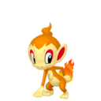 </label>
        <label class="text-sm lg:tooltip" data-tip="Piplup">  </label>
      </div>

      <div class="checkbox-item">
        <input id="home-checkbox-sinnoh-route205" type="checkbox" />
        <label class="text-sm lg:tooltip" data-tip="Pokémon that appear on the hilly road that connects Floaroma Town and Eterna City." for="home-checkbox-sinnoh-route205">Route 205 </label>
        <label class="text-sm lg:tooltip" data-tip="Buizel"> </label>
        <label class="text-sm lg:tooltip" data-tip="Wingul">  </label>
        <label class="text-sm lg:tooltip" data-tip="Pachirisu"> 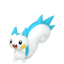 </label>
      </div>

      <div class="checkbox-item">
        <input id="home-checkbox-sinnoh-eternaforest" type="checkbox" />
        <label class="text-sm lg:tooltip" data-tip="Pokémon that dwell in the mazelike forest enveloped in chilly air." for="home-checkbox-sinnoh-eternaforest">Eterna Forest </label>
        <label class="text-sm lg:tooltip" data-tip="Murkrow">
          
        </label>
        <label class="text-sm lg:tooltip" data-tip="Misdreavus"> 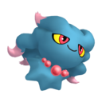 </label>
        <label class="text-sm lg:tooltip" data-tip="Buneary"> 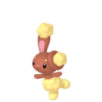 </label>
        <label class="text-sm lg:tooltip" data-tip="Budew">  </label>
      </div>

      <div class="checkbox-item">
        <input id="home-checkbox-sinnoh-pastoriagreatmarsh" type="checkbox" />
        <label class="text-sm lg:tooltip" data-tip="Pokémon that can be found in the great, water-rich marsh." for="home-checkbox-sinnoh-pastoriagreatmarsh">Pastoria Great Marsh </label>
        <label class="text-sm lg:tooltip" data-tip="Wooper">  </label>
        <label class="text-sm lg:tooltip" data-tip="Psyduck">  </label>
        <label class="text-sm lg:tooltip" data-tip="Quagsire">
          
        </label>
      </div>

      <div class="checkbox-item">
        <input id="home-checkbox-sinnoh-mountcoronet" type="checkbox" />
        <label class="text-sm lg:tooltip" data-tip="Pokémon that show themselves on the sacred mountain capped with snow." for="home-checkbox-sinnoh-mountcoronet">Mount Coronet </label>
        <label class="text-sm lg:tooltip" data-tip="Cleffa">  </label>
        <label class="text-sm lg:tooltip" data-tip="Meditite">  </label>
        <label class="text-sm lg:tooltip" data-tip="Chingling">  </label>
      </div>

      <div class="checkbox-item">
        <input id="home-checkbox-sinnoh-lakefront" type="checkbox" />
        <label class="text-sm lg:tooltip" data-tip="Pokémon that live peacefully by the shores of the lakes of the Sinnoh region." for="home-checkbox-sinnoh-lakefront">Lakefront </label>
        <label class="text-sm lg:tooltip" data-tip="Staravia">  </label>
        <label class="text-sm lg:tooltip" data-tip="Girafarig"> 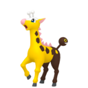 </label>
        <label class="text-sm lg:tooltip" data-tip="Sneasel"> 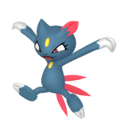 </label>
        <label class="text-sm lg:tooltip" data-tip="Bibarel"> 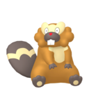 </label>
        <label class="text-sm lg:tooltip" data-tip="Machoke">  </label>
      </div>

      <div class="checkbox-item">
        <input id="home-checkbox-sinnoh-fuegoironworks" type="checkbox" />
        <label class="text-sm lg:tooltip" data-tip="Pokémon that appear around the sprawling ironworks with the forest at its back." for="home-checkbox-sinnoh-fuegoironworks">Fuego Ironworks </label>
        <label class="text-sm lg:tooltip" data-tip="West Sea Gastrodon"> 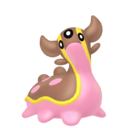 </label>
        <label class="text-sm lg:tooltip" data-tip="West Sea Shellos">  </label>
        <label class="text-sm lg:tooltip" data-tip="Luxio">  </label>
      </div>

      <div class="checkbox-item">
        <input id="home-checkbox-sinnoh-ironisland" type="checkbox" />
        <label class="text-sm lg:tooltip" data-tip="Pokémon that appear on the small, ore-rich island that is off the coast of Eterna City." for="home-checkbox-sinnoh-ironisland">Iron Island </label>
        <label class="text-sm lg:tooltip" data-tip="Steelix">  </label>
        <label class="text-sm lg:tooltip" data-tip="Geodude">  </label>
        <label class="text-sm lg:tooltip" data-tip="Qwilfish"> 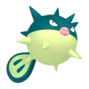 </label>
      </div>

      <div class="checkbox-item">
        <input id="home-checkbox-sinnoh-route127" type="checkbox" />
        <label class="text-sm lg:tooltip" data-tip="Pokémon that shrug off the harsh, ceaseless blizzard that blows down from Mount Coronet." for="home-checkbox-sinnoh-route127">Route 217 </label>
        <label class="text-sm lg:tooltip" data-tip="Snover">  </label>
        <label class="text-sm lg:tooltip" data-tip="Medicham">  </label>
        <label class="text-sm lg:tooltip" data-tip="Noctowl">  </label>
      </div>

      <div class="checkbox-item">
        <input id="home-checkbox-sinnoh-thegrandunderground" type="checkbox" />
        <label class="text-sm lg:tooltip" data-tip="Pokémon seen in the sprawling underground caves beneath the Sinnoh region." for="home-checkbox-sinnoh-thegrandunderground">The Grand Underground </label>
        <label class="text-sm lg:tooltip" data-tip="Houndoom"> 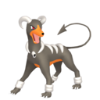 </label>
        <label class="text-sm lg:tooltip" data-tip="Ralts">  </label>
        <label class="text-sm lg:tooltip" data-tip="Munchlax"> 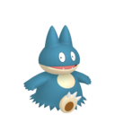 </label>
      </div>
    </div>

    <div class="sinnohtasks-rightrow">
      <div class="checkbox-item">
        <input id="home-checkbox-sinnoh-reliablepartners" type="checkbox" />
        <label class="text-sm lg:tooltip" data-tip="Partners who grew strong over the course of a difficult journey." for="home-checkbox-sinnoh-reliablepartners">Reliable Partners </label>
        <label class="text-sm lg:tooltip" data-tip="Torterra">  </label>
        <label class="text-sm lg:tooltip" data-tip="Infernape"> 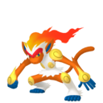 </label>
        <label class="text-sm lg:tooltip" data-tip="Empoleon">  </label>
      </div>

      <div class="checkbox-item">
        <input id="home-checkbox-sinnoh-teamgalacticspokemon" type="checkbox" />
        <label class="text-sm lg:tooltip" data-tip="Pokémon that always accompany Team Galactic's commanders." for="home-checkbox-sinnoh-teamgalacticspokemon">Team Galactic's Pokemon </label>
        <label class="text-sm lg:tooltip" data-tip="Purugly">  </label>
        <label class="text-sm lg:tooltip" data-tip="Bronzor">  </label>
        <label class="text-sm lg:tooltip" data-tip="Skuntank">  </label>
      </div>

      <div class="checkbox-item">
        <input id="home-checkbox-sinnoh-theelitefourspokemon" type="checkbox" />
        <label class="text-sm lg:tooltip" data-tip="Formidable Pokémon sent out in battle by Sinnoh's Elite Four." for="home-checkbox-sinnoh-theelitefourspokemon">The Elite Four's Pokemon </label>
        <label class="text-sm lg:tooltip" data-tip="Drapion"> 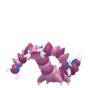 </label>
        <label class="text-sm lg:tooltip" data-tip="Hippowdon"> 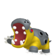 </label>
        <label class="text-sm lg:tooltip" data-tip="Rapidash">  </label>
        <label class="text-sm lg:tooltip" data-tip="Mr. Mime">  </label>
      </div>

      <div class="checkbox-item">
        <input id="home-checkbox-sinnoh-cynthiaspokemon" type="checkbox" />
        <label class="text-sm lg:tooltip" data-tip="Pokémon sent out in battle by Cynthia, a researcher of myths concerning Pokémon." for="home-checkbox-sinnoh-cynthiaspokemon">Cynthia's Pokemon </label>
        <label class="text-sm lg:tooltip" data-tip="Lucario"> 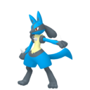 </label>
        <label class="text-sm lg:tooltip" data-tip="Roserade">  </label>
        <label class="text-sm lg:tooltip" data-tip="Garchomp"> 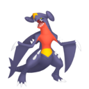 </label>
        <label class="text-sm lg:tooltip" data-tip="Milotic">  </label>
      </div>

      <div class="checkbox-item">
        <input id="home-checkbox-sinnoh-starkmountain" type="checkbox" />
        <label class="text-sm lg:tooltip" data-tip="Pokémon that make their home on the mountain thickly blanketed by volcanic ash." for="home-checkbox-sinnoh-starkmountain">Stark Mountain </label>
        <label class="text-sm lg:tooltip" data-tip="Camerupt"> 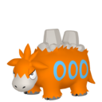 </label>
        <label class="text-sm lg:tooltip" data-tip="Magcargo">  </label>
        <label class="text-sm lg:tooltip" data-tip="Slugma"> 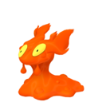 </label>
      </div>

      <div class="checkbox-item">
        <input id="home-checkbox-sinnoh-route230" type="checkbox" />
        <label class="text-sm lg:tooltip" data-tip="Pokémon that appear on an island rich with plant life along a sea route." for="home-checkbox-sinnoh-route230">Route 230 </label>
        <label class="text-sm lg:tooltip" data-tip="Dustox"> 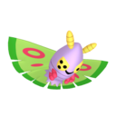 </label>
        <label class="text-sm lg:tooltip" data-tip="Beautifly">  </label>
        <label class="text-sm lg:tooltip" data-tip="Gloom">  </label>
        <label class="text-sm lg:tooltip" data-tip="Weepinbell">  </label>
      </div>

      <div class="checkbox-item">
        <input id="home-checkbox-sinnoh-route224" type="checkbox" />
        <label class="text-sm lg:tooltip" data-tip="Pokémon that live amid scenery that resembles a miniature of the Sinnoh region." for="home-checkbox-sinnoh-route224">Route 224 </label>
        <label class="text-sm lg:tooltip" data-tip="East Sea Gastrodon"> 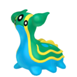 </label>
        <label class="text-sm lg:tooltip" data-tip="East Sea Shellos"> 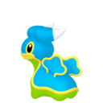 </label>
        <label class="text-sm lg:tooltip" data-tip="Pelipper"> 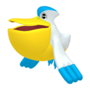 </label>
        <label class="text-sm lg:tooltip" data-tip="Floatzel"> 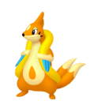 </label>
      </div>

      <div class="checkbox-item">
        <input id="home-checkbox-sinnoh-deepwithinsinnoh" type="checkbox" />
        <label class="text-sm lg:tooltip" data-tip="Pokémon that can be seen deep in the hinterlands of Sinnoh and wield a special power." for="home-checkbox-sinnoh-deepwithinsinnoh">Deep Within Sinnoh </label>
        <label class="text-sm lg:tooltip" data-tip="Cresselia">  </label>
        <label class="text-sm lg:tooltip" data-tip="Regigigas">  </label>
        <label class="text-sm lg:tooltip" data-tip="Heatran"> 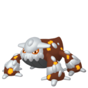 </label>
      </div>

      <div class="checkbox-item">
        <input id="home-checkbox-sinnoh-lakesofsinnoh" type="checkbox" />
        <label class="text-sm lg:tooltip" data-tip="Pokémon that appear at Sinnoh's great lakes and wield a mysterious power." for="home-checkbox-sinnoh-lakesofsinnoh">Lakes of Sinnoh </label>
        <label class="text-sm lg:tooltip" data-tip="Mesprit"> 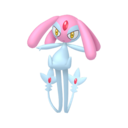 </label>
        <label class="text-sm lg:tooltip" data-tip="Uxie"> 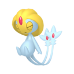 </label>
        <label class="text-sm lg:tooltip" data-tip="Azelf">  </label>
      </div>

      <div class="checkbox-item">
        <input id="home-checkbox-sinnoh-pokemonofmyth" type="checkbox" />
        <label class="text-sm lg:tooltip" data-tip="Pokémon whose names have been passed down in the mythology of the Sinnoh region." for="home-checkbox-sinnoh-pokemonofmyth">Pokemon of Myth </label>
        <label class="text-sm lg:tooltip" data-tip="Palkia"> 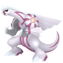 </label>
        <label class="text-sm lg:tooltip" data-tip="Dialga"> 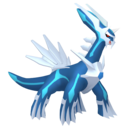 </label>
        <label class="text-sm lg:tooltip" data-tip="Giratina">  </label>
      </div>
    </div>
  </div>
</div>
